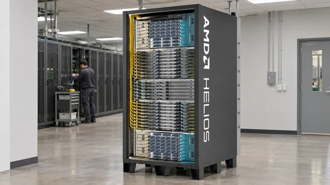

Financial news, market analysis and technology
Top Story
Market Analysis View all →
Market Analysis
Dollar Hits One-Month Low as U.S. Midterms Reshape AI Bets
The dollar reached a one-month low while Treasury prices rose, as investors reconsidered the growth and interest-rate outlook after the U.S. vote.
Market Analysis
Aramco Reports $36.3 Billion Profit as Refining Margins Lift Cash Flow
Higher refining earnings helped lift quarterly net income to $36.25 billion, strengthening cash generation for investment and shareholder payouts.
Market Analysis
UK Proposes Lifetime Pension Income Default for 17 Million
The proposal would make lifetime income a default for 17 million workplace pension savers, while allowing them to choose another retirement option.

Market Analysis
Australia Raises Interest Rates to 4.85% as Inflation Tests the Economy
A fifth rate increase this year takes the cash rate to 4.85%, extending pressure on borrowers as inflation stays stubborn.
Tech & AI View all →

Tech & AI
AMD Revenue Hits $13.4 Billion as Data-Center Sales Nearly Double
Data-center revenue rose 97% to $8.5 billion. AMD’s $17 billion fourth-quarter forecast puts its next phase of AI expansion to the test.

Tech & AI
Palantir Revenue Nearly Doubles, but Slower Deal Growth Tests Its AI Valuation
Quarterly revenue reached $2.31 billion, but slower contract momentum complicates the case for Palantir’s valuation despite stronger guidance.
Tech & AI
Apple Faces iPhone Margin Pressure as Memory Prices Rise
Memory costs threaten Apple’s holiday-quarter margins even as iPhone demand holds up, shifting attention from unit sales to profitability.

Tech & AI
Thomson Reuters Raises Outlook as AI Licensing Grows
AI licensing helped lift Reuters news transaction revenue 56%, while higher technology costs squeezed the legal business’s adjusted EBITDA margin.
Crypto View all →

Crypto
Bitcoin Recovers Toward $78,000 After Post-Election Six-Week Low
A rebound toward $78,070 followed a six-week low. Prospects for U.S. crypto legislation leave exchange-custody risks unresolved.

Crypto
US Clears Crypto-Style Perpetual Futures on Stocks as CFTC and SEC Align
Perpetual futures are moving beyond crypto. U.S. regulators have opened a route for stock-linked contracts on eligible registered markets.

Crypto
NYSE Adds Four Transfer Agents to Build Tokenized Stock Trading Infrastructure
Four transfer agents are joining NYSE’s tokenization project. Preserving shareholder rights and winning approval remain prerequisites for trading.

Crypto
Hong Kong Opens 24/7 Tokenized Interbank Settlement Under Project Ensemble
Twelve banks are participating in a pilot that settles tokenized deposits around the clock in central bank money. Commercial adoption remains the next test.
News Feed